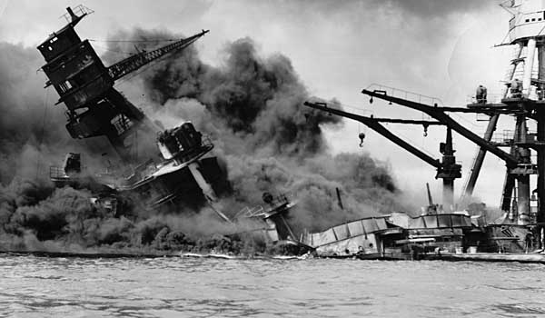

(Unknown)Japan's strike against the U.S. Base on Pearl Harbor was a tipping point in the war that had cataclysmic effects. Up until that point the United States had remained tacitly nuetral in the war. However this act of aggression ,brought about by Japan's desires to control the pacific, was a direct challenge from Japan to the U.S., and dragged America into the war on the side of the Allies.